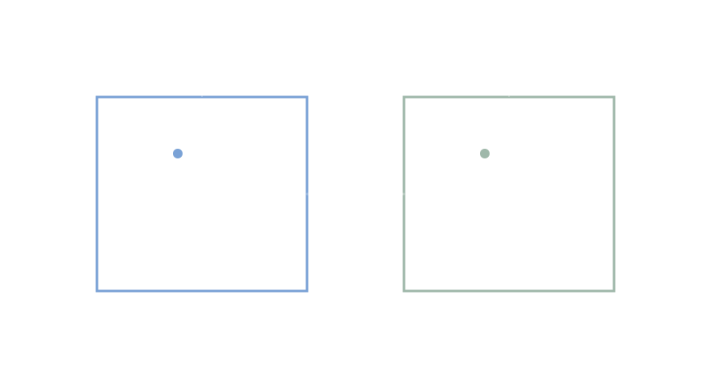

Тема проекта
Сравнительный анализ должностных инструкций и компетенций гражданского и военного специалиста
Направление: сетевое и системное администрирование. Дисциплина: ОБЗР. Структура: гражданская сфера, военная сфера, сравнительные таблицы, контрольные вопросы.

Разделы
Переход к тематическим страницам.
Гражданский специалист
Трудовые функции, обязанности, компетенции, документы (по открытым источникам).
Военный специалист
Внутренняя служба, дисциплина, связь/ИТ, режим секретности (по открытым источникам).
Сравнение
Табличное сопоставление по критериям: цели, режимы, документы, ответственность.
Проверка знаний
Контрольные вопросы по разделам и нормативной базе.
Как читать материалы
Короткие правила сопоставления, используемые на страницах.
Принцип «норма → функция → документ»
Там, где это возможно, требования привязаны к источнику (нормативному документу или профстандарту), далее — к трудовой/служебной функции, затем — к типовым документам учета и контроля.
Границы открытой информации
Разделы по военной сфере и режиму секретности приведены в рамках общедоступных формулировок (без описания организационных процедур и закрытых методик).